Marcus Anderson
Research notes, papers, software, and archived music work.
New Try my probabilistic music studio — free to sign up — at thesoundinator.com
Research
-
Experience-Dependent Differences in the Neural Representation of Food: An EEG Study of Long-Term Dietary Habits
Master's thesis (MPhil). An EEG and multivariate-pattern study finding that long-term vegetarians and vegans show enhanced neural discrimination of meat under deliberate viewing — a broad expansion of the food representational space that runs counter to exposure-based models of perceptual learning. hdl:2123/35626 -
Musical Repetition as Vocal Self-Simulation
A mechanistic theory arguing that precise repetition of affective vocalisation is the core process that turns sound into musical experience. doi:10.5281/zenodo.21715381 -
Inverse-Square Distance Pruning: An Edge-Budget Random Geometric Graph for Clustered Network Initialisation
Defines the foundational random-spatial graph construction behind the notebook series and later pruning studies, locating it in the random geometric graph family and giving density-matched evidence for its clustering and visible hierarchical properties. methods paper, with code · github.com/maracman/bio-inspired-graph-networks-course -
Three-part series
Distance-Based Pruning
One paradigm developed across three preprints: build sparse neural networks the way biology does — wire by distance, then prune. Part 1 establishes the method, Part 2 characterizes the topology it produces, and Part 3 derives the distance from the network's own activity.-
Inverse-Square Distance Priors Improve Network Pruning at Extreme Sparsity
Tests a biologically inspired 1/d² wiring prior for sparse neural networks, showing improved ResNet-18 performance at 98-99% sparsity. doi:10.5281/zenodo.21885727 -
Bandwidth and Capacity Systematically Shape the Topology of Inverse-Square Distance Pruning
Characterizes how inverse-square pruning changes network topology across input resolution and model size, highlighting bandwidth-dependent clustering and stronger 2D embeddings. doi:10.5281/zenodo.21886372 -
Activity-Derived Functional Distance for Structured Pruning
Replaces assigned coordinates with distances read from the network's own activity, preserving a trained ResNet's computation through heavy structured pruning — with a measurable condition for where the method applies. doi:10.5281/zenodo.21886434
-
Inverse-Square Distance Priors Improve Network Pruning at Extreme Sparsity
Software
Soundinator — a probabilistic, physically-modelled music studio and research instrument
A full browser-based music studio, designed and built end-to-end. It generates music from weighted probability distributions across several musical timescales, renders it through a physical-modelling synthesis engine, and arranges it on a multitrack producer timeline — while doubling as a reproducible instrument for researching why music sounds good.
Soundinator is live at thesoundinator.com — open sign-up, no invite code needed. The home page plays its patches straight away; open the studio to shape them. Found a problem? There's a “Report a problem” button in the account menu — every report helps.
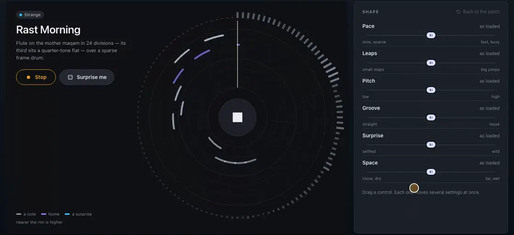
- Play, then compose — load a patch and shape it with six broad controls (Pace, Leaps, Pitch, Groove, Surprise, Space), or open any part of it as an instrument face: Melody, Duration, Phrasing, Dynamics, Harmony, Sequence and Percussion.
- Generative core — melody, rhythm, register, articulation and surprise are all driven by editable probability distributions, with motif memory that repeats, drifts and mutates into a growing repertoire.
- Physical-modelling synthesis — every note is built from an excitor → resonator → body → effects → space chain: additive and formant voices, inharmonicity, material damping, vibrato and per-note envelopes rather than samples.
- Per-layer effects rack — eleven skeuomorphic, plugin-style effects across EQ, drive, modulation, delay and character, each with its own DSP, presets and expand-to-overlay face.
- Binaural spatialisation — position each source around the listener with a head / room / air model fitted from measured KEMAR HRTFs, with per-track motion through time.
- Scale & Root — a tuning wheel that leads: set each note's role, drag to retune, turn the ring to move home. Historical temperaments and 19/24/31/53-EDO, plus a library of 78 world scales browsable as a list, a world map or a timeline.
- Producer / DAW — arrange instruments on a multitrack timeline with seed-reproducible takes, a bake-to-piano-roll note editor, a channel-strip mixer, and offline WAV mixdown.
- Community library — open sharing of instruments, sequences and behaviours with ratings and profiles, plus an auditioner that layers shared patches into a live jam.
- Research-ready — every play, rating and edit is reproducible from a seed and can be logged (opt-in only) with expectation / surprise metrics, so appeal can be modelled directly against the mechanisms that generated the music.
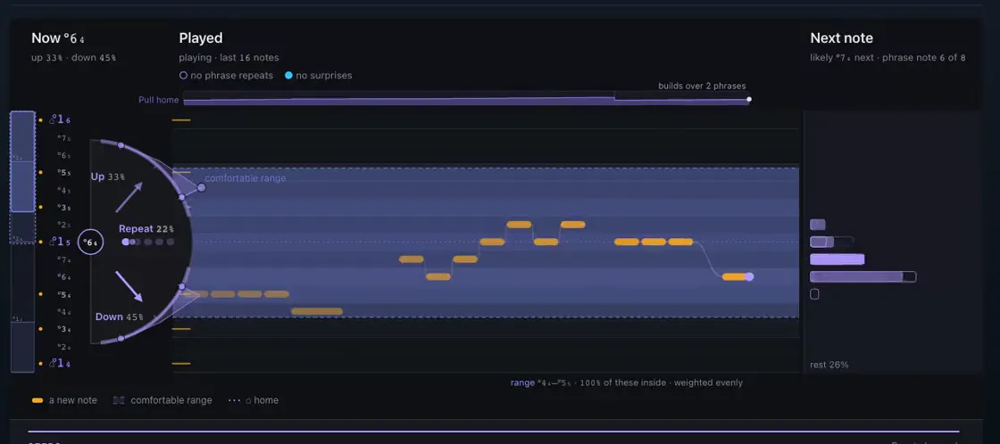
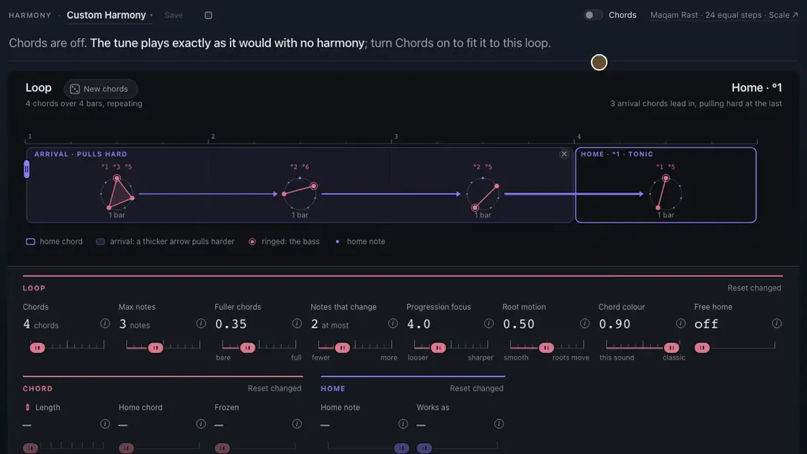
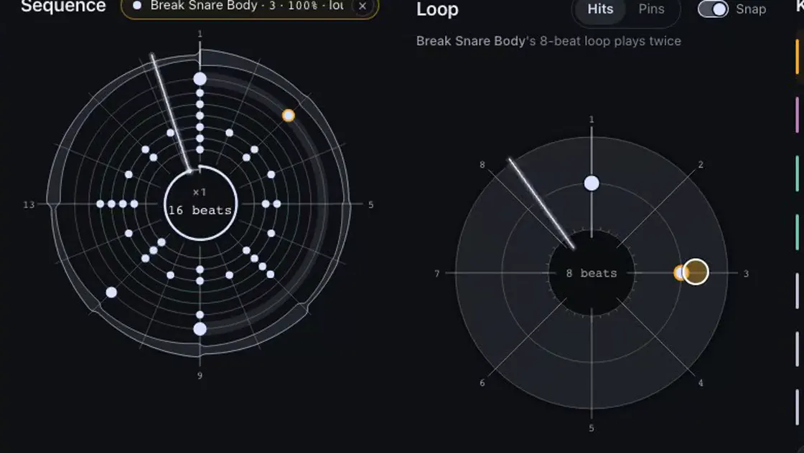
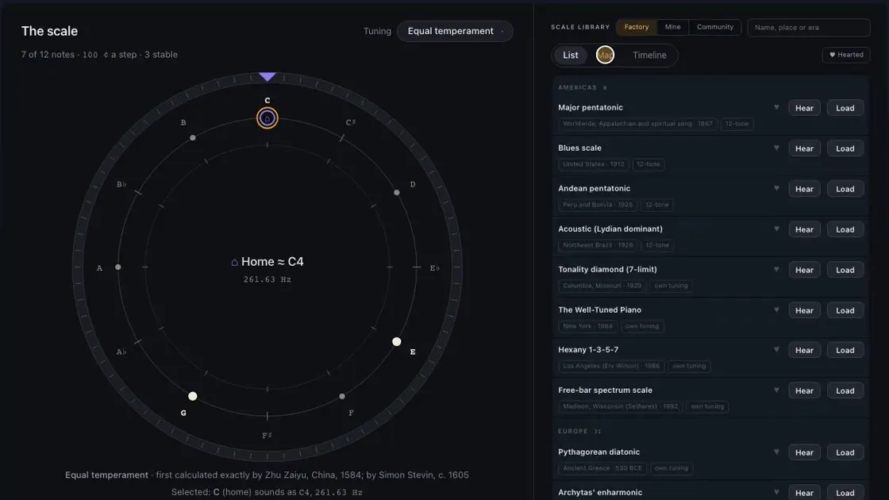
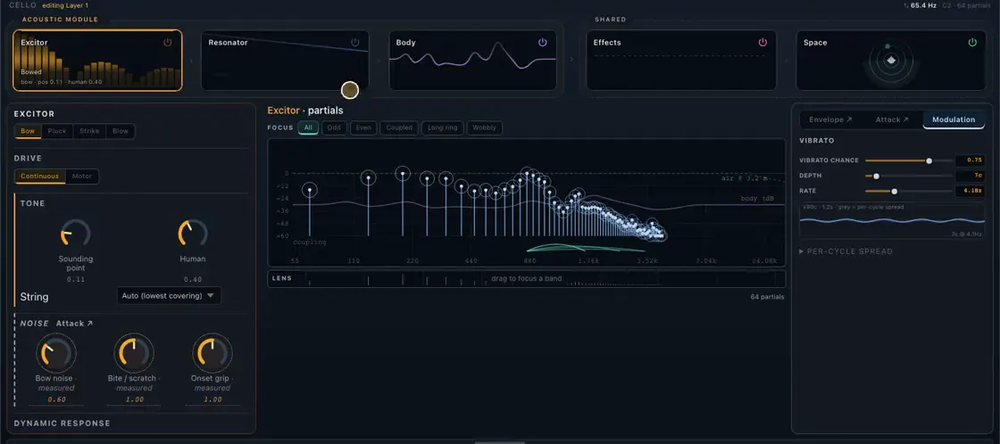
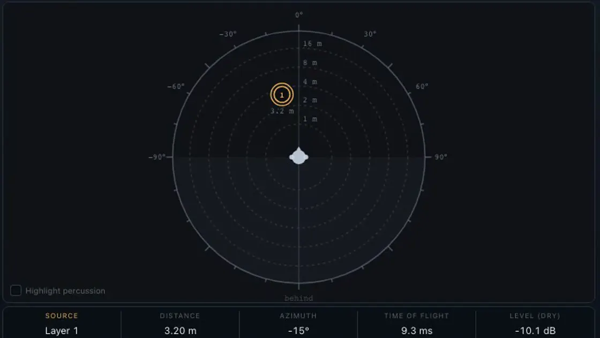
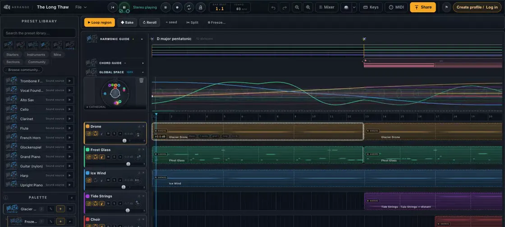
Biologically Inspired Graph Networks — a self-teaching notebook course on network topology, from graph theory to developmental pruning
An eight-notebook course that starts from graph-theory basics and builds towards the pruning-based network construction behind my sparse-network papers. It's written as a way into thinking about neural networks the way biology does: not wired from scratch, but grown dense and then pruned back. Every notebook motivates its maths with the brain — neurons as nodes, synapses as weighted edges — and ends in runnable code you can re-generate, change, and measure.
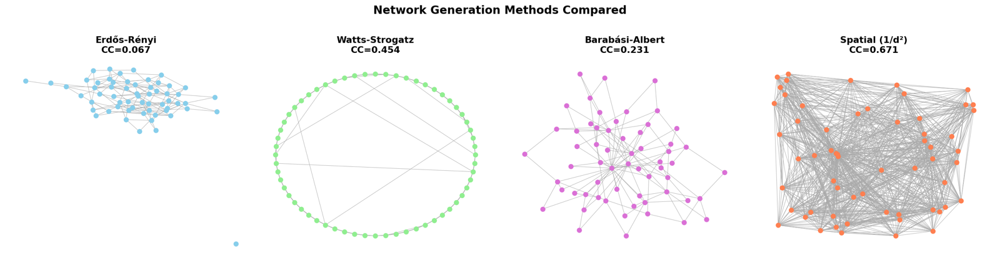
The through-line is one question: what makes a network look like a brain? The course answers it by measuring candidate networks against biological criteria, then showing that pruning a dense weighted graph reproduces those criteria more faithfully than the standard random models.
- Starts from the vocabulary — directed, weighted and simple graphs; degree, paths, cycles and connectivity — each introduced through its neural counterpart.
- Measures what matters — clustering coefficient, average path length and the small-world coefficient: the metrics used to decide whether a generated network is biologically plausible.
- Surveys the classic generators — Erdős-Rényi, Watts-Strogatz, Barabási-Albert and spatial / inverse-square models — and shows where each falls short of real cortical structure.
- Builds networks by pruning — deterministic, probabilistic and distance-weighted pruning, then multiple developmental cycles of weight decay, Pareto-principle reinforcement and elimination.
- Ends with functional analysis — spectral clustering, Louvain community detection and weighted modularity to read out the modular structure that pruning leaves behind.
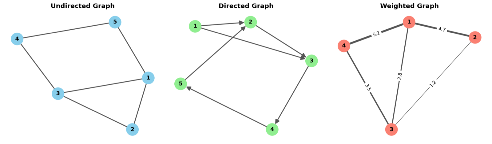
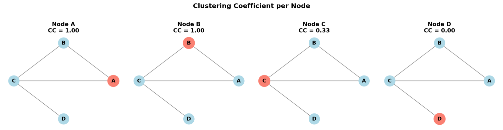
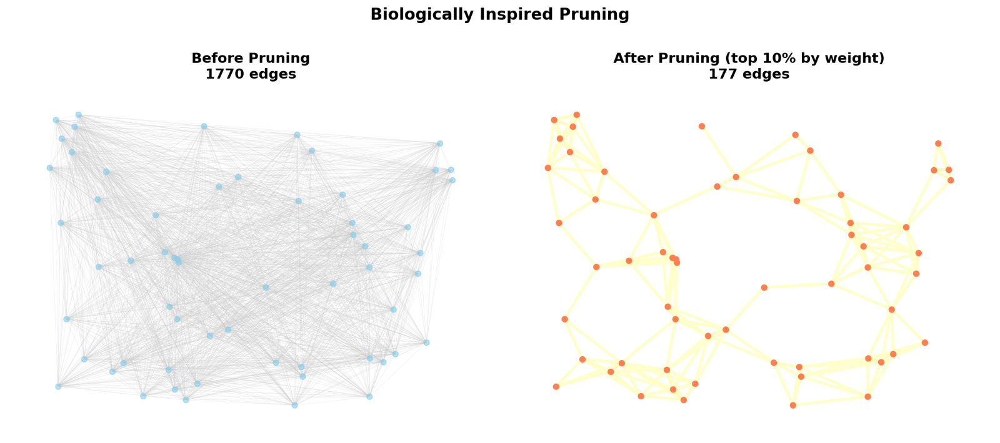
Archive
-
Music Composition, 2018-2022
Archived composition, scores, recordings, and selected credits.